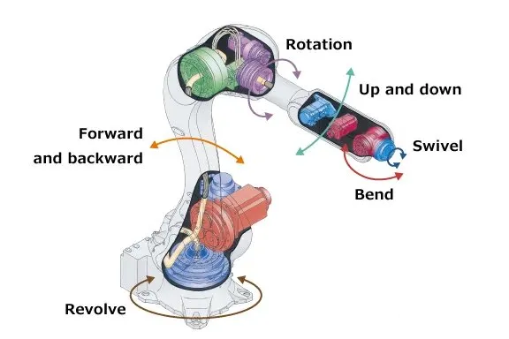

Industrirobotar
Vad är en industrirobot?
Industrirobotar är maskiner som används i fabriker för att utföra repetitiva och tunga uppgifter.
De är programmerade för att göra samma sak om och om igen med hög precision och hastighet.
Funktioner
Industrirobotar kan svetsa, måla, montera och lyfta tunga föremål.
De kan arbeta dygnet runt utan raster och blir aldrig trötta eller ofokuserade.
De används ofta inom bilindustrin, elektronikproduktion och lagerhantering.
Fakta
Den första industriroboten, Unimate, installerades på en General Motors-fabrik 1961.
Idag finns det över 3 miljoner industrirobotar i drift runt om i världen.
En industrirobot kan utföra uppgifter upp till 10 gånger snabbare än en människa.
Framtid
Framtidens industrirobotar kommer att samarbeta mer direkt med människor, så kallade "cobots".
De kommer att bli smartare med hjälp av AI och kunna lösa problem på egen hand.
De kan även användas inom nya branscher som jordbruk och byggkonstruktion.
